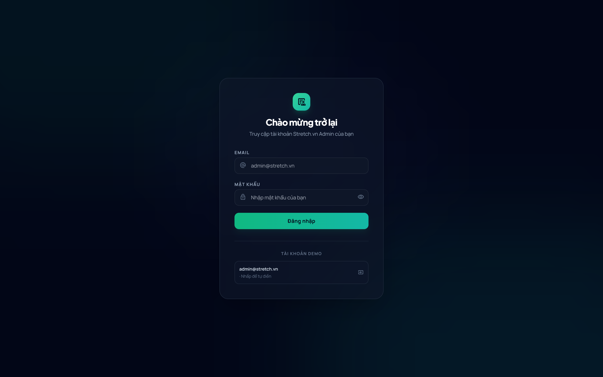
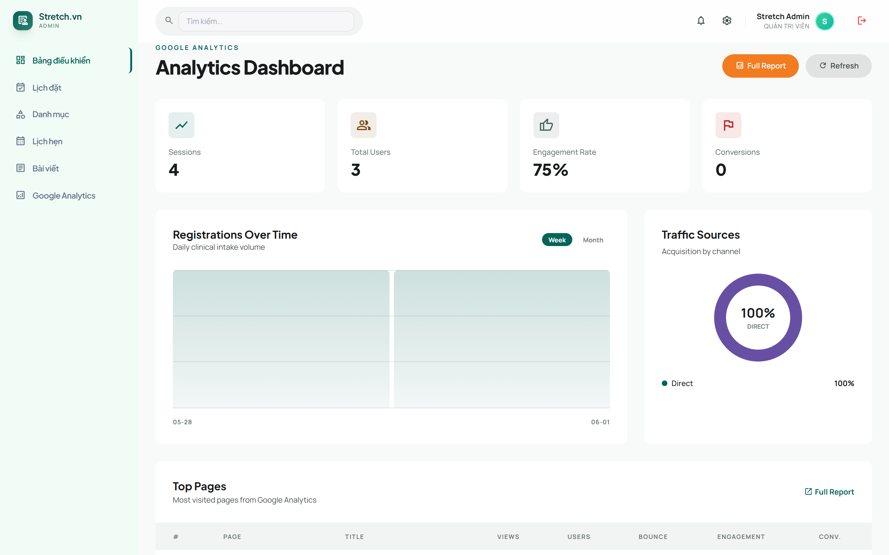
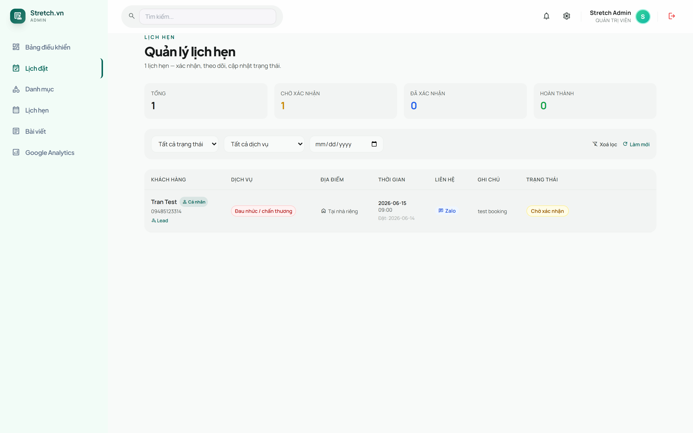
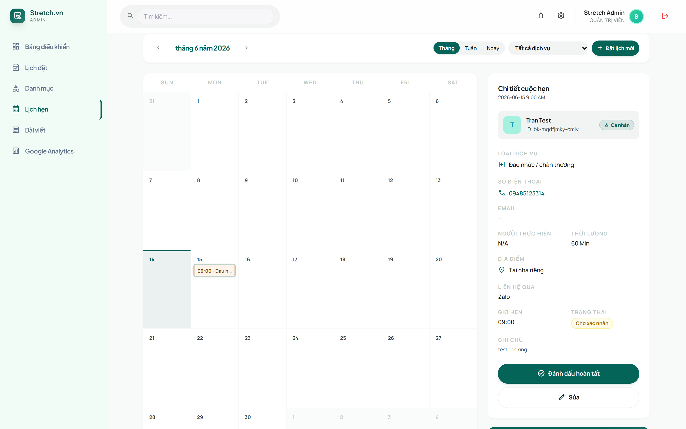
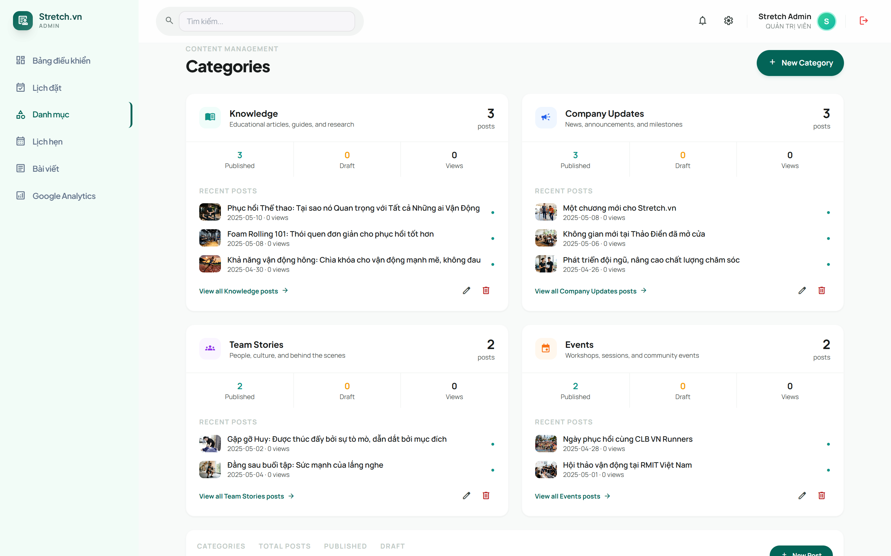
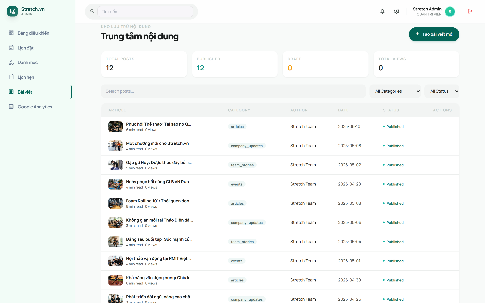
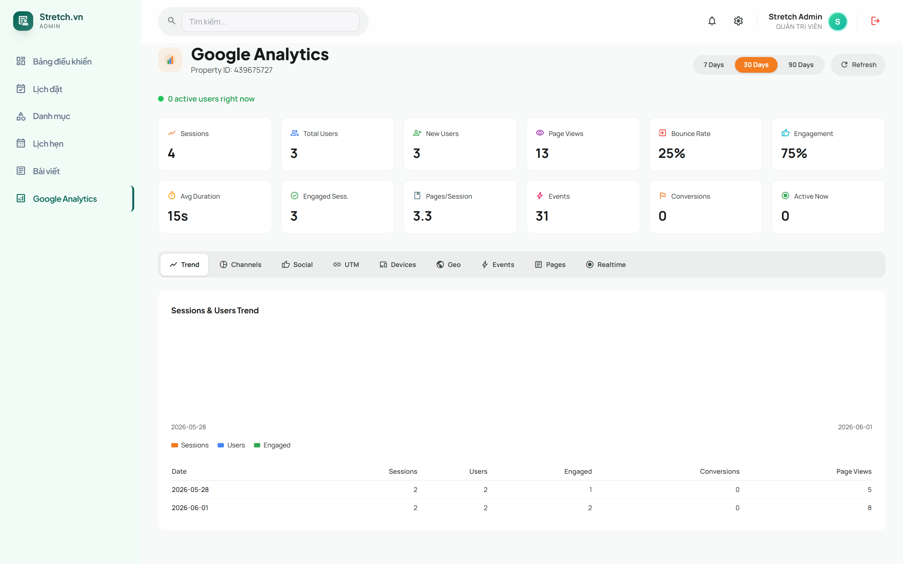
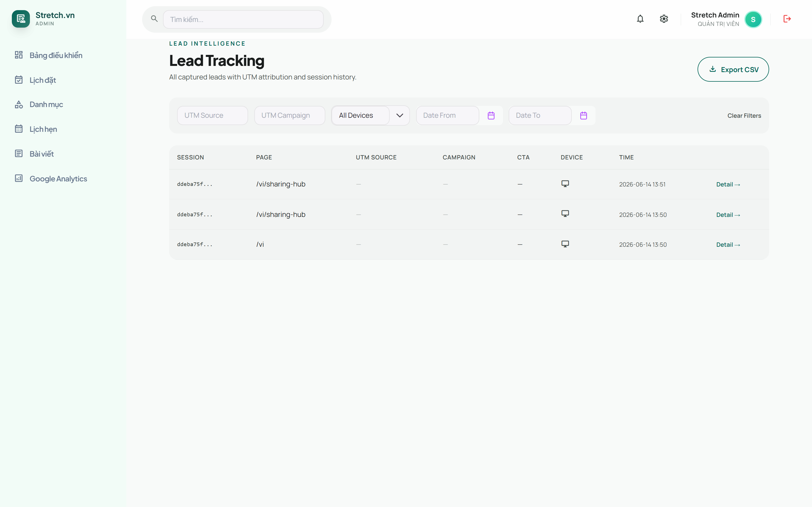

Tài liệu dành cho người dùng — quản lý lịch đặt, bài viết, dịch vụ và phân tích.
Phiên bản: 1.0 • Ngày phát hành: 14/06/2026 Đối tượng: Quản trị viên & nhân viên vận hành Stretch.vn Truy cập: Trình duyệt máy tính (Chrome, Edge, Cốc Cốc…)
Mục lục
Đăng nhập & tổng quan giao diện
Bảng điều khiển (Dashboard)
Lịch đặt (Bookings)
Lịch hẹn (Calendar) — tạo lịch mới
Danh mục (Categories)
Bài viết (Blog)
Google Analytics & công cụ tạo link UTM
Khách tiềm năng (Leads) & Dịch vụ (Services)
Mẹo sử dụng & câu hỏi thường gặp
1Đăng nhập & tổng quan giao diện
Hệ thống là một trang web quản trị nội bộ. Bạn cần tài khoản (email & mật khẩu) do quản trị viên cấp.

Hình 1. Màn hình đăng nhập hệ thống.
Cách đăng nhập
Mở trình duyệt và truy cập địa chỉ hệ thống được cấp.
Nhập Email và Mật khẩu. Bấm biểu tượng con mắt để xem/ẩn mật khẩu.
Bấm Đăng nhập. Nếu thông tin đúng, bạn sẽ được đưa vào Bảng điều khiển.
Mẹo Nếu để trống email hoặc mật khẩu, hệ thống sẽ báo lỗi ngay bên dưới ô nhập. Phiên đăng nhập được ghi nhớ trên trình duyệt, nên lần sau vào lại thường không cần đăng nhập lại.
Lưu ý bảo mật Không dùng tài khoản trên máy tính công cộng. Khi dùng xong nên đóng trình duyệt. Không chia sẻ mật khẩu cho người khác.
Bố cục màn hình
Thanh điều hướng bên trái (menu): chuyển nhanh giữa các trang. Mục đang xem được tô màu tím và có vạch dọc bên phải.
Thanh trên cùng (TopBar): hiển thị tiêu đề trang và các thao tác nhanh.
Vùng nội dung chính: nơi hiển thị bảng, biểu mẫu và dữ liệu của trang.
Các mục chính trên menu: Bảng điều khiển, Lịch đặt, Danh mục, Lịch hẹn, Bài viết, Google Analytics.
2Bảng điều khiển (Dashboard)
Trang đầu tiên sau khi đăng nhập, cho cái nhìn tổng quan nhanh về hoạt động.

Hình 2. Bảng điều khiển với các thẻ chỉ số, biểu đồ và nguồn truy cập.
Các thẻ chỉ số chính
Tổng lượt đăng ký — tổng số khách đã đăng ký, kèm tỷ lệ tăng trưởng.
Mới hôm nay — số lượt đăng ký phát sinh trong ngày.
Biểu mẫu chưa đọc — số form mới cần xử lý (có hiệu ứng nhấp nháy nhắc nhở).
Dịch vụ đang hoạt động — số dịch vụ đang mở.
Biểu đồ & bảng
Biểu đồ lượt đăng ký: cột theo từng ngày trong tuần.
Nguồn truy cập: tỷ lệ khách đến từ trực tiếp / tìm kiếm / mạng xã hội.
Khách hàng gần đây: danh sách các khách mới nhất kèm dịch vụ, ngày và trạng thái.
Thao tác
Bấm Báo cáo đầy đủ để chuyển sang trang Google Analytics.
Bấm Làm mới để tải lại số liệu mới nhất.
3Lịch đặt (Bookings)
Quản lý toàn bộ lịch đặt từ khách hàng (qua form website hoặc tạo thủ công). Đây là trang làm việc chính hằng ngày.

Hình 3. Danh sách lịch đặt với thẻ thống kê, bộ lọc và bảng chi tiết.
Bộ lọc & thống kê
Phía trên có 4 thẻ tổng hợp: Tổng, Chờ xác nhận, Đã xác nhận, Hoàn thành. Thanh lọc cho phép thu hẹp danh sách:
Lọc theo trạng thái (Tất cả / Chờ xác nhận / Đã xác nhận / Hoàn thành / Đã huỷ).
Lọc theo dịch vụ.
Lọc theo ngày.
Bấm Xoá lọc để bỏ tất cả bộ lọc, hoặc Làm mới để tải lại.
Bảng lịch đặt gồm các cột
Khách hàng — tên, số điện thoại, email, nhãn loại (Cá nhân / Doanh nghiệp). Nếu khách đến từ một phiên truy cập website, sẽ có liên kết tới hồ sơ Khách tiềm năng.
Dịch vụ, Địa điểm, Thời gian, Cách liên hệ (Gọi điện / Zalo / Email), Ghi chú.
Trạng thái và Hành động (hiện ra khi rê chuột vào dòng).
Các thao tác
Xem chi tiết: bấm vào một dòng để mở trang chi tiết lịch đặt.
Đổi trạng thái: rê chuột vào dòng → chọn trạng thái mới ở ô thả xuống → hệ thống cập nhật ngay.
Xoá: rê chuột vào dòng → bấm biểu tượng thùng rác → xác nhận.
Bảng trạng thái lịch đặt
Trạng thái
Ý nghĩa
Màu
Chờ xác nhận
Khách vừa đặt, chưa được xác nhận
Vàng
Đã xác nhận
Đã liên hệ và xác nhận lịch hẹn
Xanh dương
Hoàn thành
Buổi hẹn đã diễn ra xong
Xanh lá
Đã huỷ
Lịch hẹn bị huỷ
Đỏ
Trang chi tiết lịch đặt
Khi mở một lịch đặt, bạn thấy đầy đủ: thẻ thông tin khách (bấm số điện thoại để gọi, bấm email để soạn thư), thẻ thông tin lịch hẹn (dịch vụ, người phụ trách, ngày giờ, địa điểm, ghi chú; với khách doanh nghiệp còn có số người tham gia, không gian, địa chỉ, vai trò) và thẻ thông tin hệ thống (mã lịch đặt, thời gian tạo/cập nhật). Tại đây cũng có thể đổi trạng thái hoặc xoá.
Bảng loại dịch vụ
Mã
Tên hiển thị
recovery
Phục hồi sau vận động
pain
Đau nhức / chấn thương
stiffness
Căng cứng kéo dài
wellness
Sức khỏe doanh nghiệp
education
Giáo dục & Đào tạo
not_sure
Tư vấn chung
4Lịch hẹn (Calendar)
Xem lịch hẹn theo dạng lịch trực quan và tạo lịch đặt mới ngay trên giao diện.

Hình 4. Giao diện lịch hẹn dạng tháng/tuần/ngày.
Xem lịch
Chuyển chế độ xem Tháng / Tuần / Ngày ở thanh trên.
Mỗi lịch hẹn hiển thị dạng khối màu kèm giờ và dịch vụ. Bấm vào để xem chi tiết ở khung bên phải.
Thẻ Năng suất trong ngày cho biết số khung giờ đã được lấp đầy.
Tạo lịch đặt mới
Bấm nút Đặt lịch mới để mở biểu mẫu.
Chọn loại: Cá nhân hoặc Doanh nghiệp.
Nhập thông tin liên hệ: Họ tên, Số điện thoại, Email (khách doanh nghiệp có thêm Vai trò/Chức vụ).
Chọn Dịch vụ (danh sách thay đổi tuỳ loại khách).
Chọn Địa điểm: khách cá nhân chọn Tại nhà / Tại cơ sở / Tư vấn thêm; khách doanh nghiệp nhập số người, không gian (trong nhà/ngoài trời), địa chỉ.
Chọn Ngày và Giờ (khung 08:00 – 17:00), thêm Ghi chú nếu cần.
Bấm Lưu/Đặt lịch. Lịch mới sẽ xuất hiện trên giao diện ngay.
Mẹo Lịch tạo từ đây cũng xuất hiện trong trang Lịch đặt với trạng thái mặc định là “Chờ xác nhận”.
5Danh mục (Categories)
Quản lý các danh mục dùng để phân loại bài viết blog.

Hình 5. Các thẻ danh mục kèm thống kê bài viết.
Mỗi thẻ danh mục hiển thị
Biểu tượng & tên danh mục, mô tả, số bài viết.
Thống kê: số bài đã đăng, số bản nháp, tổng lượt xem.
Danh sách bài viết gần đây (tối đa 3), kèm liên kết “Xem tất cả bài của danh mục”.
Thao tác
Tạo mới: bấm Danh mục mới → điền form → Lưu.
Sửa: bấm biểu tượng bút chì → chỉnh sửa → Lưu.
Xoá: bấm biểu tượng thùng rác → xác nhận.
Các trường khi tạo/sửa danh mục
Nhãn (Label) — tên hiển thị. (bắt buộc)
Khoá (Key) — mã định danh, tự sinh từ nhãn, không sửa được sau khi tạo.
Mô tả, Biểu tượng (chọn từ gợi ý), Thứ tự sắp xếp, Màu chủ đề (8 màu).
Lưu ý khi xoá Khi xoá một danh mục, các bài viết vẫn giữ “khoá” của danh mục đó nhưng sẽ mất tên hiển thị. Hãy cân nhắc trước khi xoá danh mục đang có bài.
6Bài viết (Blog)
Soạn, chỉnh sửa và xuất bản bài viết cho website.

Hình 6. Danh sách bài viết với thống kê, bộ lọc và bảng quản lý.
Tổng quan trang
4 thẻ thống kê: Tổng bài, Đã đăng, Bản nháp, Tổng lượt xem.
Thanh lọc: Tìm kiếm theo tiêu đề, lọc theo danh mục, lọc theo trạng thái (Tất cả / Đã đăng / Bản nháp).
Bảng bài viết gồm: ảnh + tiêu đề, danh mục, tác giả, ngày, trạng thái, hành động.
Quy trình soạn bài
Bấm Tạo bài viết để mở trình soạn thảo toàn màn hình.
Nhập Tiêu đề, đường dẫn (slug), tóm tắt, chọn danh mục, tác giả, thẻ (tags), ảnh bìa.
Soạn nội dung bằng trình soạn thảo (CKEditor): định dạng chữ, chèn ảnh, danh sách, trích dẫn…
Chọn trạng thái Bản nháp hoặc Đã đăng ở ô thả xuống.
Bấm Lưu. Hệ thống hiển thị trạng thái tự lưu.
Thao tác nhanh trên bảng
Bật/tắt xuất bản: bấm nút trạng thái (Đã đăng ↔ Bản nháp) ngay trên dòng.
Sửa: bấm vào dòng hoặc biểu tượng bút chì.
Xoá: bấm biểu tượng thùng rác → xác nhận.
Trạng thái bài viết
Ý nghĩa
Màu
Đã đăng (Published)
Hiển thị công khai trên website
Xanh ngọc ●
Bản nháp (Draft)
Đang soạn, chưa công khai
Hổ phách ○
7Google Analytics & tạo link UTM
Theo dõi lưu lượng truy cập website (Google Analytics 4) và tạo link gắn UTM để đo hiệu quả chiến dịch.

Hình 7. Bảng phân tích Google Analytics với 6 thẻ tổng quan và các tab.
Thanh điều khiển
Chọn khoảng thời gian: 7 ngày / 30 ngày / 90 ngày.
Nút Làm mới và chỉ số người dùng đang truy cập theo thời gian thực (chấm xanh nhấp nháy).
6 thẻ tổng quan: Người dùng, Phiên, Lượt xem trang, Tỷ lệ thoát, Tỷ lệ tương tác, Chuyển đổi.
Các tab phân tích
Xu hướng (Trend): biểu đồ & bảng số liệu theo ngày.
Kênh (Channels): lưu lượng theo nguồn (tự nhiên, trực tiếp, quảng cáo, mạng xã hội…).
Mạng xã hội (Social): hiệu quả từng nền tảng + chiến dịch.
UTM: lọc và xem kết quả theo tham số UTM.
Thiết bị (Devices): tỷ lệ Mobile / Tablet / Desktop, hệ điều hành, trình duyệt.
Chọn Phương tiện (utm_medium) — social, paid_social, cpc, story, bio…
Nhập Tên chiến dịch (utm_campaign); tuỳ chọn thêm Content và Term.
Hệ thống tạo sẵn link — bấm Sao chép để dùng khi đăng bài/quảng cáo.
Vì sao cần UTM? Link gắn UTM giúp biết chính xác khách đến từ chiến dịch/nền tảng nào, từ đó đo được kênh nào hiệu quả nhất.
8Khách tiềm năng (Leads) & Dịch vụ (Services)
Hai trang này hiện không nằm trên menu chính nhưng vẫn truy cập được (qua liên kết trong lịch đặt hoặc đường dẫn trực tiếp).
Khách tiềm năng (Leads)
Theo dõi các phiên truy cập website và biểu mẫu khách gửi, kèm thông tin nguồn (UTM).

Hình 8. Danh sách khách tiềm năng với bộ lọc và nút xuất CSV.
Lọc theo nguồn UTM, chiến dịch, loại thiết bị, khoảng ngày.
Xuất CSV toàn bộ danh sách để phân tích ngoài (Excel).
Xem chi tiết một khách: dòng thời gian các sự kiện (xem trang, bấm nút, gửi form), và lịch đặt liên kết nếu có.
Dùng Trang trước / Trang sau để xem nhiều dữ liệu.
Dịch vụ (Services)
Quản lý danh mục dịch vụ của phòng khám. Mỗi dịch vụ có thể chỉnh: tiêu đề, đường dẫn, mô tả ngắn/đầy đủ, ảnh bìa & thư viện ảnh, hiển thị & giá, nhóm đối tượng phù hợp, và thiết lập SEO. Có thể lưu nháp hoặc xuất bản.
Lưu ý Trang Dịch vụ hiện đang được ẩn khỏi menu. Nếu cần dùng, liên hệ quản trị viên để mở lại.
9Mẹo sử dụng & câu hỏi thường gặp
Mẹo chung
Nhiều thao tác (đổi trạng thái, sửa, xoá) chỉ hiện ra khi rê chuột vào dòng trong bảng.
Luôn có nút Làm mới ở các trang dữ liệu — bấm khi nghi ngờ số liệu chưa cập nhật.
Dùng bộ lọc thay vì cuộn tìm thủ công để làm việc nhanh hơn.
Câu hỏi thường gặp
Đăng nhập báo sai dù gõ đúng? Kiểm tra phím Caps Lock, khoảng trắng thừa, hoặc nhờ quản trị viên đặt lại mật khẩu.
Lúc mới mở trang thấy nhấp nháy vài chữ lạ rồi mới ra biểu tượng? Đó là phông biểu tượng đang tải. Trang sẽ hiển thị bình thường sau một nhịp; tải lại trang (Ctrl + F5) nếu cần.
Đổi trạng thái lịch đặt xong có cần lưu không? Không. Hệ thống tự lưu ngay khi bạn chọn trạng thái mới.
Xoá nhầm dữ liệu thì sao? Thao tác xoá là vĩnh viễn và đều có hộp xác nhận trước. Hãy đọc kỹ trước khi bấm “Đồng ý”.
Bài viết để “Bản nháp” khách có thấy không? Không. Chỉ bài ở trạng thái “Đã đăng” mới hiển thị công khai trên website.
Cần hỗ trợ? Liên hệ quản trị viên hệ thống Stretch.vn để được cấp tài khoản, đặt lại mật khẩu hoặc mở thêm quyền truy cập các trang bị ẩn.